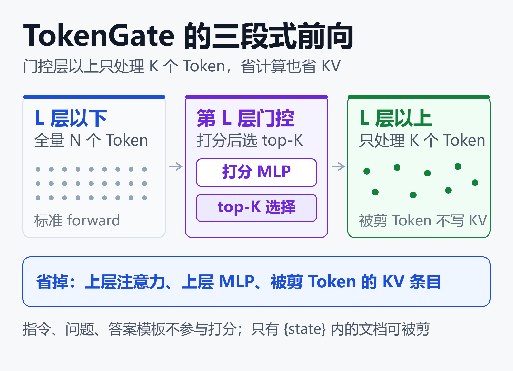
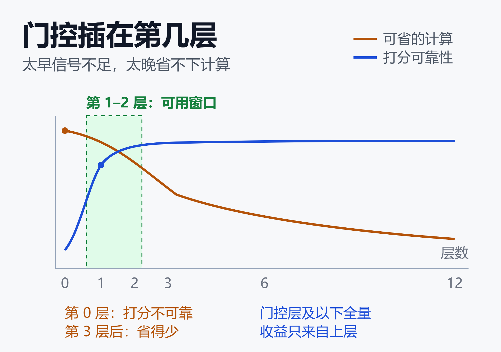

斯坦福 TokenGate 拆解：让模型学会略读，长上下文预填充快 11.3 倍
32,000 个 Token 的输入，只保留其中 100 个送进模型上层，其余全部丢弃。
答案照样一字不差。这是 TokenGate 官方示例给出的第一组数字：同一段保罗·格雷厄姆散文集，完整预填充 1471 毫秒，保留 100 个 Token 后 130 毫秒。
KV 缓存里也只剩 144 个 prompt token，占比 0.4%。
听起来像无损压缩，其实是精心设计的取舍。11.3 倍的加速从哪来、代价落在哪、现在能不能用，需要拆开看。
长上下文真正的瓶颈在「读」，不在「写」
大模型处理一段输入分两步。预填充（prefill）把整段 prompt 并行过一遍，生成首个 Token 之前的等待时间就是 TTFT；解码（decode）再一个一个往外吐字。
预填充的注意力计算随长度平方增长，是典型的算力受限阶段。
上下文越长，用户等得越久，GPU 也被占得越满（NVIDIA 技术博客：长上下文注意力的协同设计）。
麻烦在于，代码仓库、PDF、检索回来的文档都是请求到达时才给的。它们的 KV 缓存没法提前算好，每次请求都得重新读一遍。
现有两条应对路线各有短板。一条是免训练剪枝，用注意力分数之类的启发式规则丢掉不重要的 Token，部署便宜，但剪得狠了精度就崩。另一条是改架构，往往要从头预训练，代价高到只有少数团队玩得起。
TokenGate 想补的正是这个缺口：把「哪些 Token 值得继续算」从一条人工规则，改成模型自己学的目标。
三段式：在第 L 层插一个门
TokenGate 的结构很小，小到可以用一句话说完：在前几层之后插一个打分器，只放行得分最高的 K 个 Token。
具体分成三段。第 L 层及以下照常处理全部 N 个 Token；到第 L 层，门控模块给每个可剪 Token 打一个分，选出 top-K；第 L 层以上只处理这 K 个 Token，也不为被丢掉的那些生成 KV 条目。
哪些 Token 可剪，由提示词里的 {state} 占位符划定。占位符里放文档，占位符外是指令、问题和答案模板——这些永远不剪。

这张图的关键在于「省在哪」：被剪掉的 Token 不会进入上层，因此既不算注意力，也不占 KV 缓存。TTFT 和峰值显存的收益，都来自这条分界线。
真正的难点：top-K 不可微，梯度怎么回去
选 top-K 是一个离散动作，没法直接求导。这是所有「可学习剪枝」研究的共同拦路虎。
作者的解法借鉴了混合专家模型（MoE）。MoE 用路由器给专家网络加权，实现参数层面的稀疏；TokenGate 则给注意力 logits 加权，实现 Token 层面的稀疏。
具体做法是：每个被保留 Token 的重要性分数，会变成上层注意力 logits 上的一个逐 key 偏置。分数高，这个 Token 更容易被别的 Token 注意到。
这样一来，虽然「选谁」仍然不可微，但「选了之后权重多大」是可微的。标准的下一个 Token 预测损失，就能沿着这条偏置把梯度送回打分网络。
两个细节让这套机制站得住。其一是逐头增益，每个注意力头有自己的缩放系数，用 softplus 保证为正。
其二是温度校准：剪枝后每个 query 能看到的 key 变少了，softmax 会变得更尖锐，于是用一个随剪枝比例变化的温度项把分布拉回来。
训练配方也很朴素，没有额外的辅助损失：
- 每一步算两路损失，一路用全上下文，一路用随机采样的剪枝预算
- 剪枝预算按 log-uniform 从 1 采到文档长度的一半
- 主干用 LoRA（r=16，只挂 q/v 投影），门控矩阵用 Muon 优化器
- 两路损失各占一半，加权求和后反传
全上下文那一路锚住精度，同时让每个 Token 都拿到梯度；随机预算那一路逼门控适应各种剪枝比例。所以一个门控训完，推理时 K 可以随便调，不用重训。
| 组件 | 解决的问题 |
|---|---|
| 打分 MLP | 逐 Token 重要性 |
| top-K 选择 | 只放行 K 个 |
| 注意力偏置 | 给梯度一条路 |
| 温度项 | 校准剪枝后分布 |
三组数字，三种口径，别混着用
论文的核心结论是：在 Qwen3-1.7B 上跑五个任务，预填充快 1.4–11.3 倍，峰值显存降 1.5–3.4 倍，精度不低于同任务的全上下文基线。
区间跨度这么大，是因为任务差别大。检索类任务（大海捞针）几乎不损失精度，代码补全和摘要就吃力得多。
仓库 README 给了一张更具体的对照表，测的是完整留出集、单卡 H100、batch size 1：
| 数据集 | 原始模型→剪枝后 | K=2000 加速 |
|---|---|---|
| NIAH 16k | 0.993→1.000 | 6.3× |
| RepoBench-P | 0.285→0.550 | 3.8× |
| BioDEX | 0.056→0.292 | 2.1× |
这张表要横着读，也要竖着读。
横着看，RepoBench 从 0.285 涨到 0.550，涨幅看着惊人。但 README 自己说明，其中还包含任务微调带来的提升：同一个 TokenGate 模型完全不剪枝时是 0.587，剪到 K=2000 掉到 0.550。
也就是说，剪枝确实掉了点，只是掉完之后仍远高于未微调的原始模型。把「微调收益」和「剪枝代价」混在一起，就会高估剪枝本身。
论文里还有一组容易被误读的数字。2WikiMultihopQA 上「95% 质量下快 3.0 倍、省 2.7 倍显存」，这是一个设了阈值的运行点，允许精度掉到全上下文的 95%，和「同精度下快 11.3 倍」不是一回事。
最亮眼的 11.3 倍出现在 NIAH 16k。作者还把只在 16k 上训过的门控直接拿去测更长上下文：32k 达 12.8 倍，64k 和 128k 都是 13.0 倍，显存稳定在 3.4 倍左右。
这组外推只在检索任务上验证过，不能直接套到别的任务。
门控插在第几层，是一道跷跷板
门控位置是个必须手选的超参数，而且两个方向都有代价。
放得太早，比如第 0 层，此时 Token 的表示还很浅，打分网络拿不到足够信号，整体表现明显劣于放在第 1、2 层。论文在 BioDEX 上对比了 0、1、2 三层，第 0 层落在帕累托前沿之外。
放得太晚，门控以下的层已经把所有 Token 全量算过一遍，能省的越来越少。因为收益只来自门控层以上的部分。
所以实际可用的窗口很窄：第 1、2 层附近。论文的五个任务统一用第 1 层，这也解释了为什么收益上限被锁死——前两层和它们的 KV 缓存始终是全量的。

这张图想说明的是：TokenGate 不是「插哪都行」的即插即用模块，它有一个需要按模型调的超参数，而且调错了收益会直接消失。
混合注意力模型：这次能剪到线性层
值得单独说一句的是 Qwen3.5-2B 上的结果。这个模型每四层才有一个完整注意力层，其余是 Gated DeltaNet，用固定大小的循环状态代替 softmax 注意力。
免训练剪枝方法大多依赖注意力分数，只能在完整注意力层动手。TokenGate 的打分网络读的是隐藏状态，所以门控可以放在 DeltaNet 层上。
在 NIAH 32k 上，门控放第 3 层时精度对齐全上下文，TTFT 快 3.8 倍；前移到第 1、2 层能到 7.8 倍，代价是精度差 6% 以内。作为对照，同精度下最好的 FastKV 是 2.1 倍。
这条结果的意义不在数字，而在适配面：新一批混合架构模型正在把线性层和注意力层混着用，能剪线性层的方案，天然比只能剪注意力的方案多一块地盘。
它剪掉了什么：论文里最值得读的一节
附录 E 把门控实际保留的 Token 可视化了出来。这部分比主结果更有信息量，因为它暴露了失败模式。
作者在每个数据集上取真实样本，保留最少量的 Token，再看模型答成什么样：
| 任务 | 留下的 Token | 出错方式 |
|---|---|---|
| 代码补全 | 逗号、括号 | 与全上下文同错 |
| 多文档摘要 | 虚词、事件词 | 人名地点错 |
| 病历抽取 | 诊断词、连词 | 数字几乎不留 |
| 大海捞针 | 整句针 | 无 |
摘要是最典型的例子。模型在 K=256 时把事件说对了，人名、职业、地点却全错——因为门控偏爱虚词，把大写的人名地名当成低价值 Token 剪掉了。
病历抽取则几乎不留数字。剂量、指标这类纯数字 Token，在打分网络眼里显然不如「感染性休克」这样的诊断词重要。
代码补全更有意思：留下的多是逗号和空括号，几乎没有标识符，分布也很零散。作者的解读是，上层把这些 Token 当成文件结构的锚点，而不是内容副本。
这些例子说明，TokenGate 不是无损压缩，它是在重新分配模型的注意力预算。分配得好不好，高度依赖任务形态，而且失败时往往错在细节——恰恰是最难被自动评测发现的地方。
想真的用起来，还有四道门槛
第一道是工程成熟度。仓库是 Apache-2.0，2026 年 10 月 19 日建仓，版本号 0.1.0，约百来颗星，issue 区还是空的。
依赖也很前沿：torch>=2.9、transformers>=5.5。想要那套快速注意力核，得自己编译一个改过的 FlashAttention-2；不编译就退化到 FlexAttention，能跑但会慢一些。
更关键的是生态位。它只提供 HuggingFace transformers 上手写的推理路径，没有 vLLM、SGLang 接入，没有 GGUF 量化版本，也还没上 PyPI。
仓库的 TODO 里把 CI、PyPI 包、Colab 示例都列为待办。
第二道是缓存。这是最容易被忽略、也最要命的一条。
主流的推理引擎靠前缀缓存（prefix caching）跳过重复计算：多轮对话里，前面那一大段上下文只算一次。而 TokenGate 的门控分数取决于文档内容，也取决于文档之前的指令和问题。
官方示例的 prompt 是「指令 → 问题 → 文档」。问题变了，文档里每个 Token 在第 1 层的隐藏状态就会变，门控选出的 K 个 Token 也跟着变，原先缓存的剪枝结果就不能直接复用。
从原理上看，想保住缓存，得把文档放在前面、问题放在最后，让门控的选择与问题解耦——但那又会削弱「按问题挑内容」的能力。这个矛盾论文没有测，属于机制层面的判断，实际影响需要在自己的流量上验证。
第三道是场景匹配。2026 年一项针对智能体负载的研究给出了不太友好的数据。
多轮 agent 场景下，输入 Token 的缓存命中率高达 84.6%–99.5%，解码占了 LLM 总耗时的 91.0%–98.6%（arXiv：Agentic AI Workload Characteristics）。
换句话说，当缓存足够好时，预填充本来就已经很便宜了。TokenGate 的 11 倍加速，打的是一次性长文档这个场景，而不是「一轮一轮往下滚」的 agent。
Reddit 上有条评论说得更直接：把可学习剪枝接进注意力，就破坏了前缀缓存（r/LocalLLaMA 讨论帖）。
而前缀缓存，才是长上下文能在本地跑起来的唯一原因。
第四道是收益上限。门控层及以下仍然全量计算、全量存 KV，所以显存只降 1.5–3.4 倍，不是十倍量级。解码阶段也没被优化，长输出的场景收益有限。
判断：它是训练配方，不是推理插件
把这几条放在一起，TokenGate 的定位就清楚了。
它更像一个「替换 SFT/PEFT 的适配方式」，而不是「装上去就变快」的推理插件。你要为每个任务训一个门控，训完得到的是一个新模型，不是一个开关。
适合它的场景有共同特征：长文档一次性送达、任务明确、能接受少量细节丢失。文档问答、代码库级补全、病历与财报抽取、批量文档处理，都符合。
不适合的场景也有共同特征：多轮交互、需要复用超长 system prompt、要求逐字不丢的合规抽取。在这些地方，缓存和完整性比预填充速度更重要。
如果打算试，建议先做三件事：
- 用自己任务的指标做 K 扫描，别只看 NIAH 的数字
- 单独测「换问题、不换文档」时的缓存命中率变化
- 把门控层位置当成超参数搜一遍，第 1 层不是万能答案
小结
TokenGate 的贡献不在那几个倍数，而在把 token 剪枝从「启发式规则」推进到「可学习目标」。
MoE 的思路被搬到了上下文维度：稀疏的不再是参数，而是被处理的 Token。加上门控注意力和双预算训练，这条路第一次变得可以端到端跑通，而且训练成本只比普通 LoRA 高一点。
但它也把代价摊在了明面上。前两层仍然全量计算，显存收益有硬上限；剪枝会漏掉人名、数字这类低显著度 Token；前缀缓存与门控选择的耦合还没有解。
对研究者，这是一条值得跟的线。对工程团队，现在更适合当成一个可验证的原型，而不是生产依赖。
免责声明
本文基于 TokenGate 论文、官方仓库与公开报道整理，所有性能数字均为作者自报，尚无第三方独立复现。文中涉及的机制推断已单独标注，不构成部署建议。
参考来源
- arXiv —— TokenGate: Adapting LLMs for Fast and Memory-Efficient Prefill with Learned Token Pruning
- arXiv —— TokenGate 论文全文（含附录、失败案例与训练细节）
- GitHub —— token-gate-llms/TokenGate 官方仓库
- MarkTechPost —— Stanford and UC Berkeley Introduce TokenGate
- 阿里云开发者社区 —— TokenGate：端到端可训练的 Token 剪枝机制，让大模型 Prefill 提速 11.3 倍
- NVIDIA 技术博客 —— Co-Designing AI Model Attention for Fast, Interactive Long-Context Inference
- arXiv —— Agentic AI Workload Characteristics
- ACL Anthology —— FastKV: Decoupling of Context Reduction and KV Cache Compression
- Reddit r/LocalLLaMA —— Researchers from Stanford and UC Berkeley Introduce TokenGate
- Reddit r/LocalLLaMA —— TokenGate 论文讨论帖
- X —— Liana Patel 发布线程
- Stanford AI Lab —— Token-Gated LLMs 发布帖
- Liana Patel 个人主页（斯坦福博士，LOTUS 作者）
相关阅读
- 长上下文不等于长记忆：大模型“看清”百万 Token 的五层方法
- 大模型注意力机制全景：从 MHA 到 MLA、DSA 与混合线性架构，一文看懂技术演进
- 大模型推理框架选型2026：vLLM、SGLang、TensorRT-LLM、Ollama、Xinference五大框架怎么选
- 跑分第一最贵，跑分第四最便宜：AI 编程 Agent 的效能剪刀差
推荐搭配装备
善其事，利其器。以下硬件能最大化你的AI体验👇
🔗 通过以上链接购买可支持本站持续运营 🙏